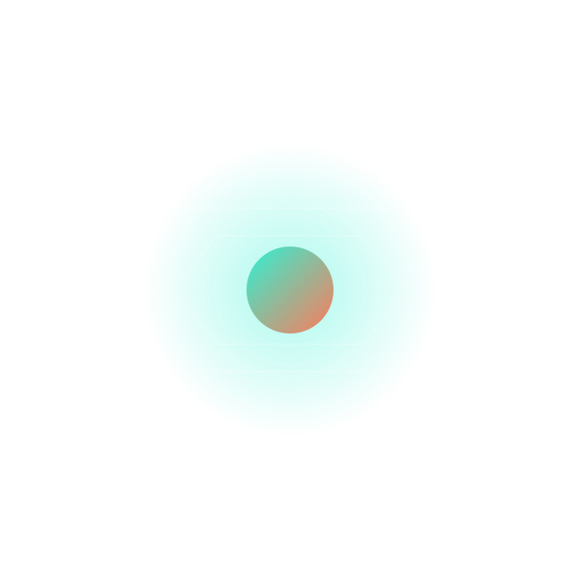
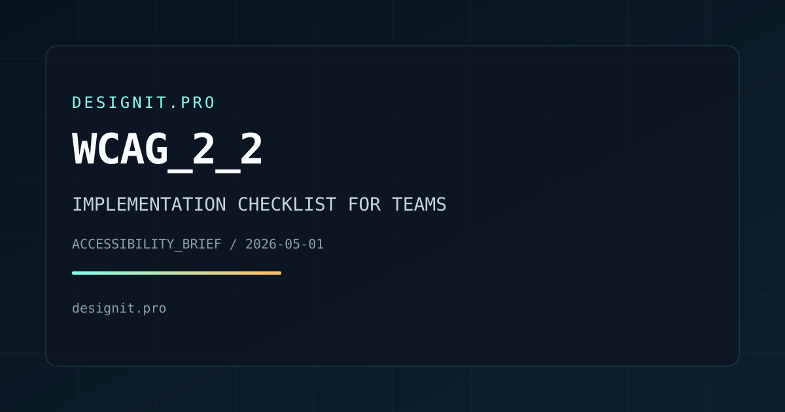
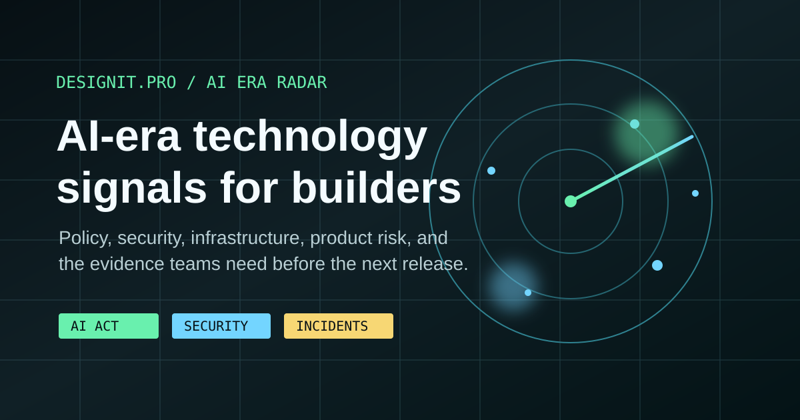

Find the signal
inside AI-era
technology change.
DesignIt.pro turns fast-moving AI, cybersecurity, regulation, infrastructure, and product-risk news into source-led briefings that explain what teams should build, test, disclose, monitor, and document next.

Coverage Areas
Digital Product Regulation
EU and UK rules translated into inventories, supplier evidence, release gates, disclosure controls, and customer-facing obligations teams can maintain.
- Deadline maps
- Role classification
- Supplier evidence
Accessibility And UX Compliance
Accessibility requirements converted into component criteria, authentication checks, manual QA scope, and evidence that survives complaint review.
- Component criteria
- Manual QA scope
- Complaint evidence
Security And Resilience
Cyber resilience, vulnerability reporting, operational continuity, supplier risk, and controls teams can prove before incidents expose the gaps.
- Vulnerability intake
- Incident evidence
- Recovery drills
Operations And Delivery
Documentation, rollout discipline, recovery drills, and performance decisions that keep regulatory work usable after launch and audit-ready.
- Release controls
- Runbook quality
- Performance budgets
AI Era Radar
Frontier AI And Capability Shifts
Model capability, agentic workflows, evaluation pressure, open-weight dynamics, and what they change for product owners deciding what is safe to ship.
READ RADAR >AI Security And Incident Evidence
Prompt injection, automated attack paths, vulnerability discovery, secure model access, monitoring, and the logs teams need when AI systems fail.
READ SECURITY >AI Regulation Into Release Work
AI Act transparency, role classification, generated-content labelling, supplier commitments, and evidence that belongs in ordinary release gates.
READ AI ACT >How We Work
We start with official texts, regulator guidance, standards, and implementation notes before we write anything opinionated.
Each piece explains what changed, which date matters, who is exposed, and what work usually gets missed between legal review and release.
We revise articles when dates move, guidance hardens, or practical obligations become clearer. Material changes are timestamped in public.
We would rather publish fewer briefings that teams can act on than a feed of thin summaries that go stale the week after publication.
Featured Briefing
WCAG_2_2_IMPLEMENTATION_CHECKLIST
A practical guide for the four new Level AA success criteria in WCAG 2.2 as the working delivery baseline for European Accessibility Act readiness. Covers Focus Not Obscured, Dragging Movements, Target Size Minimum, and Accessible Authentication with failure patterns and delivery guidance.

Editorial Process
Topic Selection
Choose subjects where a legal or standards change creates immediate design, engineering, or operational work.
Source Review
Read the official text first, then compare it with regulator guidance, implementation material, and current delivery practice.
Editorial Draft
Write for the people doing the work: what changed, what date matters, what to inventory, and what breaks if you wait.
Technical Review
Pressure-test the piece against real release workflows, supplier dependencies, and evidence a team could actually gather.
Public Updates
If a milestone passes or guidance changes materially, we revise the page and make the updated date visible.
How reporting, corrections, and review work
Our standards page explains how we source, verify, revise, and correct coverage. It is part of the publication, not hidden legal padding.
Latest Reports
AI_ERA_TECHNOLOGY_RADAR
A source-led map of the AI-era signals worth tracking now: frontier AI, cybersecurity, AI Act obligations, incident evidence, infrastructure pressure, and what each one changes for builders.

AI_ERA_TECHNOLOGY_RADAR
Frontier AI, cybersecurity, incident evidence, infrastructure pressure, and regulation translated into a practical discovery map for readers who want signal without the noise.
READ RADAR >AGENT_ZERO_AFTER_V1_20
A look at Agent Zero's current public release line: skills, plugins, Git-backed work, browser tooling, office surfaces, OAuth, and security hardening.
READ REPORT >DATA_ACT_AFTER_GO_LIVE
Why 12 September 2025 was only the starting gun, and why product teams now need evidence for portability, switching, and provider exit.
READ REPORT >ACCESSIBILITY_AFTER_JUNE_2025
The European Accessibility Act is now live. This briefing maps what that means for ecommerce flows, component QA, and evidence collection.
READ REPORT >RESILIENCE_DRILLS_UNDER_DORA
What regulated operational resilience looks like after the deadline passes: tested procedures, accountable ownership, and third-party evidence.
READ REPORT >DESIGN_SYSTEMS_FOR_REGULATED_RELEASES
Design systems now carry legal weight. The article shows how tokens, contribution rules, and signoff workflows reduce compliance drift.
READ REPORT >AI_ACT_READINESS_MAP
With AI Act transparency rules 17 days away, July Commission materials make generated-content labelling, cybersecurity, supplier evidence, and product inventory urgent release controls.
READ REPORT >EFFICIENCY_IS_AN_OPERATING_DECISION
Performance, asset weight, and repeat-download waste increasingly show up in procurement questions, sustainability reviews, and accessibility outcomes.
READ REPORT >CRA_SHIPPING_CALENDAR
The Cyber Resilience Act is not a distant legal memo anymore. This article maps the 2026 reporting date and the 2027 general application deadline.
READ REPORT >RETRY_DISCIPLINE_FOR_REAL_INCIDENTS
Still one of the fastest ways to turn a partial outage into a full one. We break down retry budgets, overload signals, and safe client defaults.
READ REPORT >DOCUMENTATION_THAT_SURVIVES_AUDIT
How to write handover notes, control inventories, and decision logs that remain usable when regulators, customers, or incident responders ask for proof.
READ REPORT >GDPR_ENFORCEMENT_IN_2026
Enforcement has shifted from headline fines to broader DPA action. This briefing maps the failure patterns most likely to reach product teams: consent, rights requests, transparency duties, and Article 30 records.
READ REPORT >BUILDING_A_PSIRT_FOR_SMALL_TEAMS
The CRA vulnerability reporting timeline requires a working process before September 2026. This guide covers intake, triage criteria, response coordination, and ENISA reporting for product teams without a dedicated security function.
READ REPORT >WCAG_2_2_IMPLEMENTATION_CHECKLIST
A practical checklist for the four new Level AA success criteria in WCAG 2.2 — Focus Not Obscured, Dragging Movements, Target Size Minimum, and Accessible Authentication — with failure patterns and implementation guidance.
READ REPORT >NO_MATCHES_FOUND. Adjust filters or search terms.
Update Log
Send the page URL, the claim, and the evidence
If a briefing is wrong, incomplete, or missing an important source, send it through the contact page. Correction requests come first.